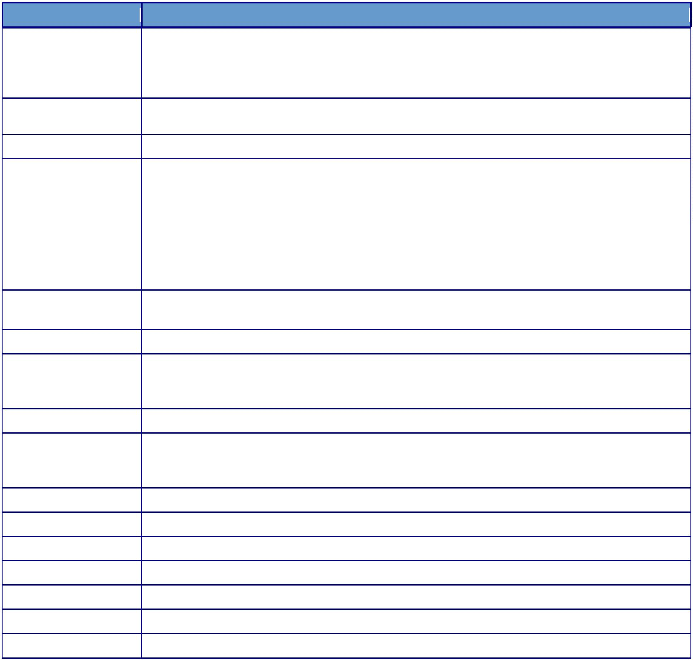
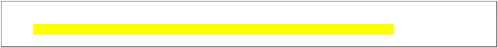
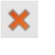
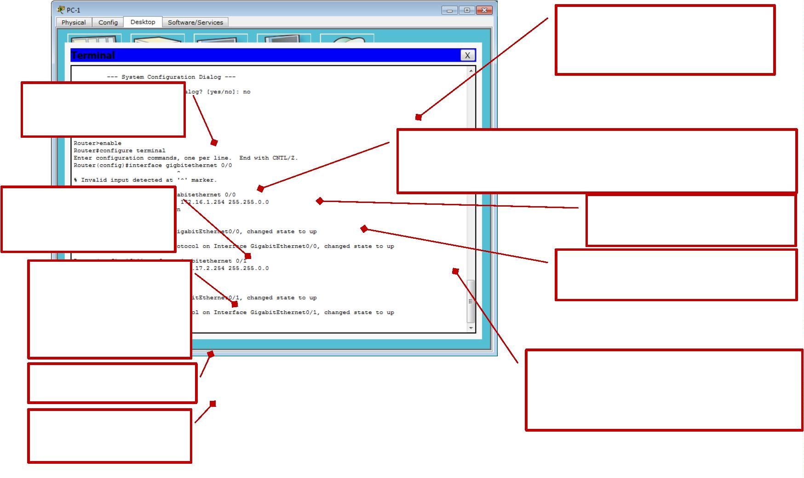

Présentation du TP
Ce TP a été réalisé sur Cisco Packet Tracer dans le cadre du cours réseau. L'objectif est de comprendre le fonctionnement du routage IP : comment un routeur sait vers où envoyer un paquet, et comment configurer des routes pour interconnecter plusieurs réseaux.

Configuration des routeurs
Chaque routeur a ses interfaces configurées avec les adresses IP correspondant aux réseaux auxquels il est connecté. On entre en mode configuration terminal pour modifier les interfaces une par une. Les captures annotées en rouge sur ce TP montrent les éléments clés à retenir.


Table de routage
La table de routage indique au routeur par où envoyer les paquets selon leur destination. La commande show ip route affiche cette table. Les entrées marquées C sont des réseaux directement connectés, les entrées S sont des routes statiques configurées manuellement.
Annotation des captures
Les captures de ce TP sont annotées avec des encadrés rouges indiquant les commandes importantes, les valeurs à retenir ou les erreurs à éviter. C'est une méthode utilisée en cours pour mettre en évidence les points essentiels lors des corrections.
